岡山県浅口市鴨方町六条院西2320番地
0865-44-6655
■カビの発生を防ぎます
脱酸素剤・キーピットは、カビなど酸素がなくては生育できない好気性細菌の繁殖を抑えます。キーピットは包装フィルムを透過するわずかな酸素も逃がさず吸収し続けますから、長時間、カビ抑制効果を持続させることができます。
■油脂、ビタミン等の酸化を防ぎます
食品中の油脂は酸素に触れることによって酸化し、劣化していきます。また、食品に含まれるビタミンE、C、なども酸化によって損なわれたり、変質していきます。キーピットはこうした酸化の過程をストップ。食品の品質、栄養素を守ります。
■食品の風味、色の変化を防ぎます
酸化は食品の色、風味にも悪影響を及ぼします。キーピットは食品中に含まれる色素の変退色を防ぐとともに、コーヒーやお茶、海苔などの香り成分を保持。食品のおいしさ、みずみずしさを守ります。
■害虫による被害を防ぎます
脱酸素剤・キーピットには、穀類などに巣くう害虫を死滅させる働きもあります。キーピットは薬剤ではないので安全性も高く、害虫の卵に対しても確実な効果が期待できます。
データ1.カビ発生防止
商品:スポンジケーキ
(KON/PE包装 25℃保存)
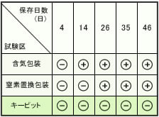
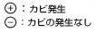
データ2.カビ発生防止
商品:バターピーナッツ
(KON/PE包装 30℃保存)
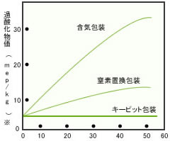
データ3.変色防止
商品:サラミソーセージ
(KON/PE包装 25℃保存)
外観観察
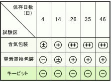
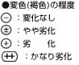
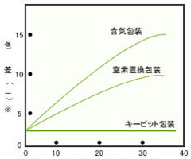
保存日数(日) (KON/PE包装 25℃保存)
※:赤味と黄色味で初期値との差を表し、数値が大きい程、初期値との差が大きい事を示す。
キーピットの各種類につきましては、食品の諸条件、保存条件等により異なる場合がございますので、実装実験により効果を確認のうえ、御使用ください。
商品の種類、用途に合わせてさまざまなキーピットを用意しています
■キーピットの分類と主な用途
ドレンシーでは、鉄の酸化反応を利用した「鉄系」キーピットの他に、非金属性化合物の酸化反応を利用した「有機系」キーピットも取り揃えています。
酸素吸収特性から見れば、空気に触れるとすぐに反応を開始する「自力反応型」と商品の水分を感知して反応を開始する「水分依存型」に分類されます。
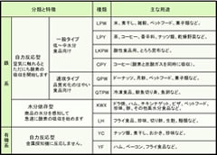
【鉄系自力反応型キーピット】
空気に触れると同時に、酸素の吸収を始めます
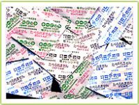
キーピット自体が水分を保有しており、空気に触れるとすぐに酸素の吸収を始めます。
商品の水分量、脱酸素するときの温度、脱酸素の希望速度などに応じて、さまざまなタイプのキーピットが用意されています。
 鉄系自力反応型キーピット1一般タイプ
鉄系自力反応型キーピット1一般タイプ
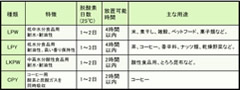
※酸素吸収量が20～500mlまでのサイズでは、糸状の酸素検知財を脱酸素剤に接着させた一体型のものも製造可能です。
鉄系自力反応型キーピット1速攻タイプ
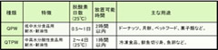
※酸素吸収量が20～500mlまでのサイズでは、糸状の酸素検知財を脱酸素剤に接着させた一体型のものも製造可能です。
【鉄系水分依存型キーピット】
商品の水分を感知して、急速に酸素の吸収を始めます
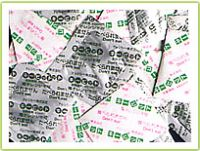
キーピット自体には水分を含ませていない為、空気中ではほとんど酸素吸収が行われません。
このタイプは、高水分の商品に使用すると商品からの水分を感知して、急速に酸素吸収を始めます。
鉄系水分依存型キーピット
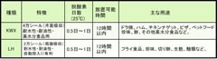
※酸素吸収量が20～500mlまでのサイズでは、糸状の酸素検知財を脱酸素剤に接着させた一体型のものも製造可能です。
【有機自力反応型キーピット】
非金属性化合物ですから、金属探知機に反応しません
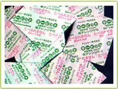
有機系自力反応型には次のような2種類のタイプがあります。
YCタイプは吸収した酸素量とほぼ同容量の炭酸ガスを発生し、全体の体積変化が少ないという特長があります。
YFタイプは酸素吸収がはやく、又炭酸ガスを発生しない特長をもっています。
以上の2つのタイプは、いずれも非金属性化合物で作られたものなので、金属探知機に反応しません。
有機系自力反応型キーピット
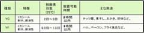
脱酸素剤「キーピット」は酸素ゼロ状態をつくり食品の鮮度とおいしさを守ります
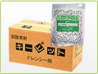
キーピットは、鉄が酸化して錆びるときに酸素を吸収する働きを利用した、鉄粉系の脱酸素剤です。
空気中には約21%の酸素が存在しますが、食品の鮮度・品質保持という観点からは、この酸素がなかなかに厄介な存在。
脱酸素剤・キーピットは密閉容器内（食品包装内）の酸素を吸収し、限りなく酸素ゼロに近い（酸素濃度0.1%以下）密封空間を作り出すことにより、カビの繁殖や酸化など酸素が食品に与えるマイナスの影響を除去。
食品の鮮度とおいしさを守ります。
当社では様々な種類のカイロも取り扱っております
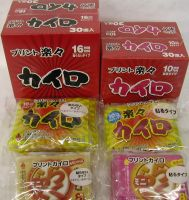
身体の芯からジワ～っと暖めます！
■冷え性対策に
■冬場の通勤・通学・屋外作業等の防寒対策に
■冬場のスポーツやレジャーに
■夏場のクーラーの冷えすぎに
レギュラーサイズと、お子様や女性向けに ミニサイズをご用意しており、幅広い年齢層の方々にお使い頂いております。
脱酸素剤・カイロ
環境整備関連機器
大麦若葉
会社概要
トップ